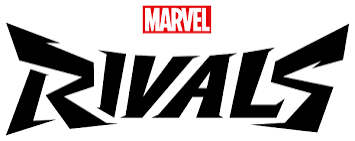

Marvel Rivals is a third person 6v6 hero shooter featuring a variety of marvel charecters each with their own lore about why they are in the game each season is 2 months with half seasons being 1 month every half season there is a new hero release.
Right now this is my most played game and I honestly would recemend it to anyone thats looking for a game to play with friends and be your favorite marvel heros but if you want a competitve tryhard game marvel rivals is not it.
There are 3 different classes,vangaurd/tank, duelist/dps, and stratagist/healer I personally play duelist to me it is the most fun class and has the most amount of variety with it having the most heros but you cannot win a game with out the other 2 roles, stratagist keep everyone alive and in my opinion has the most overtuned heros, then theres tanks they are the front line of the fights they have the most health in the game. there is a ranked playlist that goes in this order Bronze, Silver, Gold, Platinum, Diamond, Grandmaster, Celestial,(my peak) eternity, and One Above All (top 500). celestial/eternity is where all of the stremers are there are three different gamemodes domination which is basically king of the hill next there is convoy where you have to push an objective, lastly there is convergence which is a mix of convoy and domination where you have to capture a point and then push a objective in my opinion the worst gamemode is domination is mostly because it has the most maps so it is usually played the most, also half of the maps have a pillar in the middle of them the devs probabaly thought it was a good idea to put cover on the point but it is mostly just a nuisance
my favorite quote from a streamer is "The game is good but the games are bad"this means that the game balance feels good to play but the community and people who play arent fun to play wih.
| system | fps | mods | I play on |
|---|---|---|---|
| PC | unlimited | YES | sometimes |
| CONSOLE | 60 | NO | usually |
| Can strean on both but better on PC | ——— | ||